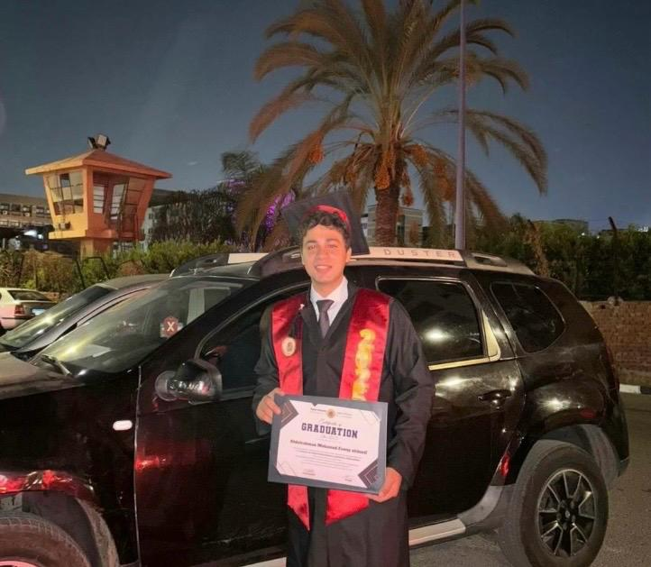

STSmart — Robotics & IoT Division
Worked with real-time robotics, IoT, sensor integration, automation, Python, and embedded systems in practical engineering contexts.
AI Automation Engineer
Computer Vision • Automotive AI • Deep Learning • NLP & LLM Systems
I build practical AI applications that connect intelligent models with real-world workflows—from real-time vision and automotive safety systems to RAG copilots and automation.

Profile
AI Automation Engineer with practical experience building end-to-end AI systems across Computer Vision, Deep Learning, NLP, RAG, LLM-based systems, automotive AI, real-time inference, and embedded AI.
I focus on working applications: Python-based AI pipelines, model integration, APIs, interfaces, and useful deployable systems.
Selected engineering work
AI engineering projects across requirements intelligence, automotive safety, perception, automation, and embedded systems.
Technical capability
Organized by the systems I build—not arbitrary percentages.
Industry exposure
Worked with real-time robotics, IoT, sensor integration, automation, Python, and embedded systems in practical engineering contexts.
Developed experience with embedded firmware, real-time control, industrial hardware, communication protocols, and IoT integration.
Additional technical experience
Practical experience building responsive websites and digital products for businesses, e-commerce, and digital-product use cases.